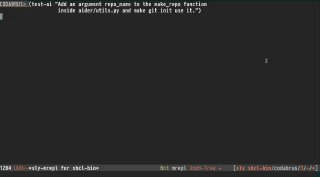

Свой Code Assistant
Tagged as codeassistant, aider, cursor, llm, project
Written on 2025-07-20

Все выходные я провозился с созданием своего собственного Code Assistant. Очень интересно было разобраться в том, как вообще все это работает. К сожалению, статей именно про устройство кодовых ассистантов не так уж много.
В основном попадаются восторженные статьи про то, как круто работает вайб-кодинг, как с его помощью написали первый Hello World и тому подобное говно. Но мне повезло найти одну очень интересную статью, где автор анализирует работу IDE Cursor и устройство его промпта.
Я начал писать своего кода-ассистента, ориентируясь на исходники проекта Aider, но посматриваю и на другие проекты с открытым кодом, типа RooCode, Cline и прочих.
Сегодня случился замечательный момент — мой ассистент смог отредактировать файл. Он самостоятельно нашел место для правки, составил патч, наложил его с помощью инструментов и внес изменения. На демо прикрепленном к этому посту, видно, что сначала ассистент попытался найти упоминание функции по кодовой базе, затем прочитал часть найденного файла с помощью инструмента read_file, а затем сгенерировал и наложил на него патч.
Я изучил, как устроено редактирование файлов в Aider и Cursor. Там правки происходят через вызовы к LLM — формируется небольшой патч в кастомном формате, где указаны старые и новые исходники, затем эти инструкции скармливаются более быстрой LLM, которая уже и меняет исходник.
Я пошел другим путем — для редактирования использую CLI команду patch, научив LLM формировать правильный diff. Пока работает неидеально: иногда дифф получается некорректным, и команда патч ломается. Но если показать LLM ошибку, она делает следующую попытку с исправленным патчем. Обычно ко второй-третьей попытке всё получается.
Я планирую дальше развивать код-ассистент. Теперь нужно добавить цикл проверки изменений через тестирование.
Особенно интересно работать с таким проектом в Common Lisp — можно быстро экспериментировать: смотреть внутренний стейт, править функции, добавлять новые инструменты и сразу тестировать изменения. Такой режим работы очень удобен. Даже для интерфейса я пока использую CL REPL, но планирую добавить веб-интерфейс и может быть консольный, как у Aider. Пока, это площадка для экспериментов!
Created with passion by 40Ants